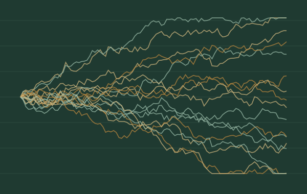
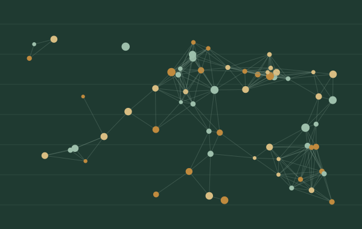
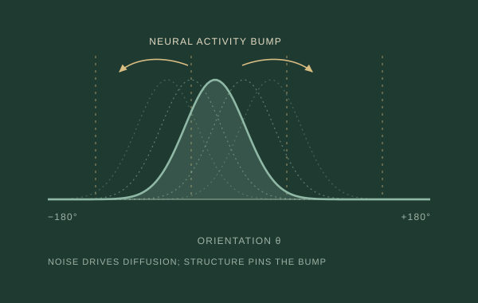

Research
Our group develops dynamical models of biological intelligence: how organisms, and groups of them, decide, remember and search, and what mechanisms make that possible. The work links stochastic neural dynamics, Bayesian inference, and adaptive decision making.

DECISION MAKING
Decision making and Bayesian inference
When the world changes, old information can become misleading. I study how decision makers balance incoming evidence, prior experience, and the possibility of change.
Questions include when to stop gathering evidence, how to learn environmental change rates, and when seeking information is more valuable than chasing a reward.
- Human decision-makers terminate evidence accumulation using flexible decision rulesI. Kalburge, A. Dallstream, K. Josić, Z.P. Kilpatrick, L. Ding & J.I. Gold · eLife, 2026
- Information-seeking decision strategies mitigate risk in dynamic, uncertain environmentsN.W. Barendregt, J.I. Gold, K. Josić & Z.P. Kilpatrick · J. R. Soc. Interface, 2026
- Normative decision rules in changing environmentsN.W. Barendregt, J.I. Gold, K. Josić & Z.P. Kilpatrick · eLife, 2022
- Optimizing sequential decisions in the drift-diffusion modelK.P. Nguyen, K. Josić & Z.P. Kilpatrick · J. Math. Psychol., 2019
- Stochastic models of evidence accumulation in changing environmentsA. Veliz-Cuba, Z.P. Kilpatrick & K. Josić · SIAM Review, 2016

FORAGING AND COLLECTIVE BEHAVIOR
Foraging, search, and collective behavior
An animal deciding when to abandon a depleting patch faces the same problem as one deciding when to stop gathering evidence: when is what you have in hand worth less than what you could find elsewhere? We study that question for solitary foragers, for searchers in confined space, and for groups whose members can watch one another.
In a group the problem changes character. Social information is worth something, since the others have sampled the patch too, but coupling that is too strong drags a forager out of a patch it should have stayed in. Recruitment, inhibition, and individual differences all set where a collective lands between those failures.
- Daring few, patient many: division of labor in decentralized foraging collectivesH. Kim, Z.P. Kilpatrick & K. Josić · PNAS, 2026
- Resource depletion accelerates rate learning but not composition learning in patch foragingZ.P. Kilpatrick & A. El Hady · Preprint, 2026
- Social discounting enables fast and reliable collective escapeZ.P. Kilpatrick · Preprint, 2026
- Stochastic dynamics of social patch foraging decisionsS. Bidari, A. El Hady, J.D. Davidson & Z.P. Kilpatrick · Phys. Rev. Research, 2022
- Uncertainty drives deviations in normative foraging decision strategiesZ.P. Kilpatrick, J.D. Davidson & A. El Hady · J. R. Soc. Interface, 2021
- Hive geometry shapes the recruitment rate of honeybee coloniesS. Bidari & Z.P. Kilpatrick · J. Math. Biol., 2021
- Heterogeneity improves speed and accuracy in social networksB. Karamched, M. Stickler, W. Ott, B. Lindner, Z.P. Kilpatrick & K. Josić · Phys. Rev. Lett., 2020
- Social inhibition maintains adaptivity and consensus of foraging honey bees in dynamic environmentsS. Bidari, O. Peleg & Z.P. Kilpatrick · R. Soc. Open Sci., 2019
- Optimizing a jump-diffusion model of a starving foragerN. Krishnan & Z.P. Kilpatrick · Phys. Rev. E, 2018
- Neural field model of memory-guided searchZ.P. Kilpatrick & D.B. Poll · Phys. Rev. E, 2017
Patch-foraging demonstration

NEURAL DYNAMICS
Neural dynamics and working memory
Neural activity can persist after a stimulus disappears. I study how these patterns encode information, drift under noise, and interact with the structure of a network.
Working-memory errors offer a window into these dynamics, and into the way experience shapes our expectations.
- Wandering bumps in stochastic neural fieldsZ.P. Kilpatrick & B. Ermentrout · SIAM J. Appl. Dyn. Syst., 2013
- Astrocytic resource diffusion stabilizes persistent activity in neural fieldsN. Palmer, H.L. Cihak, D. Avitabile & Z.P. Kilpatrick · SIAM J. Appl. Math. (Life Sciences), 2026
- Multiscale motion and deformation of bumps in stochastic neural fields with dynamic connectivityH.L. Cihak & Z.P. Kilpatrick · Multiscale Model. Simul., 2024
- Robustly encoding certainty in a metastable neural circuit modelH.L. Cihak & Z.P. Kilpatrick · Phys. Rev. E, 2024
- Learning efficient representations of environmental priors in working memoryT.L. Eissa & Z.P. Kilpatrick · PLoS Comput. Biol., 2023
- Distinct excitatory and inhibitory bump wandering in a stochastic neural fieldH.L. Cihak, T.L. Eissa & Z.P. Kilpatrick · SIAM J. Appl. Dyn. Syst., 2022
- Synaptic mechanisms of interference in working memoryZ.P. Kilpatrick · Sci. Rep., 2018
- Synaptic efficacy shapes resource limitations in working memoryN. Krishnan, D.B. Poll & Z.P. Kilpatrick · J. Comput. Neurosci., 2018